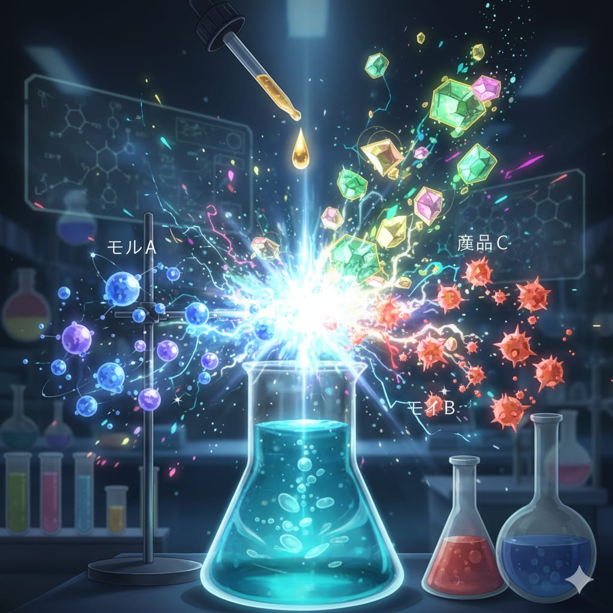

Mol adalah satuan SI untuk jumlah zat. Satu mol didefinisikan sebagai jumlah zat yang mengandung partikel sebanyak **Bilangan Avogadro** ($6.022 \times 10^{23}$).
1 mol = 6,022x 1023 partikel
Massa molar adalah massa (dalam gram) dari 1 mol zat. Nilainya sama dengan Ar atau Mr.
Massa Atom Relatif (Ar) adalah perbandingan massa rata-rata satu atom unsur dengan (1/12) massa atom karbon-12.
Nilai Ar suatu unsur biasanya dapat ditemukan pada tabel periodik.Contoh: Ar untuk karbon (C) adalah 12, dan Ar untuk hidrogen (H) adalah 1.
Massa Molekul Relatif (Mr) adalah jumlah total massa atom relatif (Ar) semua atom yang membentuk suatu molekul.Perhitungan: Untuk menghitung Mr, kalikan Ar setiap atom dengan jumlah atomnya dalam molekul, lalu jumlahkan semua hasilnya.
Rumus: Mr= Σ (Ar x jumlah atom).
Contoh soal: Untuk molekul metana (CH 4)
Mr CH4 = Ar C + 4 x Ar H)
Mr CH4
Rumus Konversi:
Mol (n) = Massa (gram)/Massa Molar (g/mol)
Contoh soal: Berapa mol NaOH jika diketahiu massa 10 gram dan Mr NaOH adalah 40 g/mol.
Penyelesaian:
Massa(m):10 gram
Mr NaOH : 40 g/mol
jawab :
n : m/Mr
n : 10 g/ 40 g/mol
n : 0,25 mol
Jadi, jumlah mol NaOH adalah 0,25 mol.

Sebuah ilustrasi terjadinya reaksi kimia.Berikut ini link pembelajaran untuk menambah wawasan pembaca: